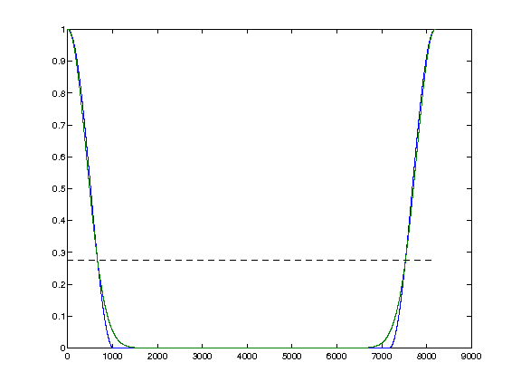

atheight = winwidthatheight(gnum)
| gnum | Window. |
| atheight | Relative height where both windows have the same width. |
| minorm | Error of the windows |
atheight = findbestgauss(gnum) searches for a Gaussian window which is closest to window gnum and returns a relative height atheight at which both windows have the same width. gnum must be a numeric vector returned from from gabwin or firwin. The function does a simple heuristic search. Nothing fancy.
The following example shows how to use this function to determine parameters of the Gaussian window closest to the Hann window:
% Create a probe
gnum = firwin('hann',1024);
atheight = findbestgauss(gnum)
% ...
% Elsewhere we want parameters of a Gaussian window for different
% Hann window
ghann = firwin('hann',2048);
width = winwidthatheight(ghann,atheight);
L = 4*2048;
ggauss = pgauss(L,'width',width,'atheight',atheight);
plot(0:L-1,normalize([fir2long(ghann,L),ggauss],'inf'));
hold on;
lhandle = line([1,L],[atheight,atheight]);
set(lhandle,'LineStyle','--'); set(lhandle,'Color','k');
hold off;
% The following can be directly used in |dgtreal| and |constructphasereal|
g = {'gauss','width',width,'atheight',atheight};
This code produces the following output:
atheight = 0.277000000000000